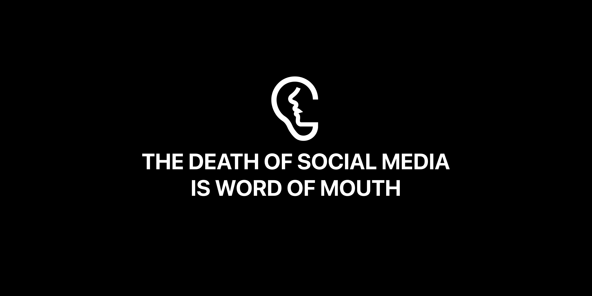
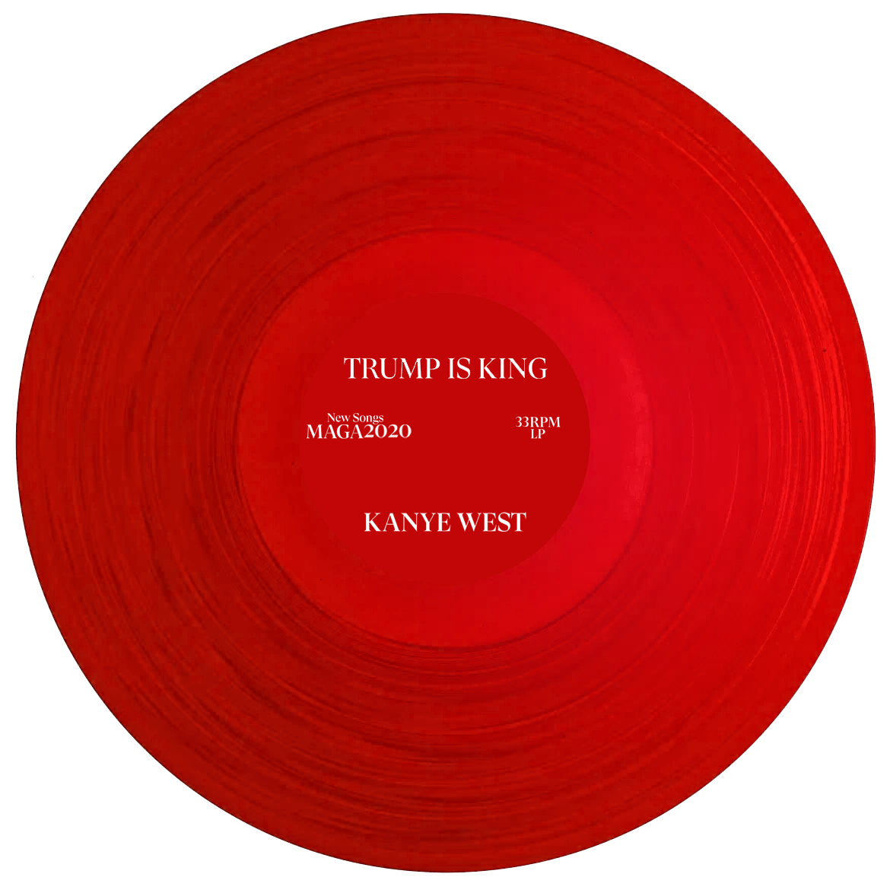

A recreation of basically the entirety of the Harry Potter universe in Minecraft. Filled with plenty of places to explore and puzzles and quests to fulfill, players can visit some of the most recognizable Harry Potter locations like Hogwarts, Diagon Alley, and much more. Featured by IGN, BBC, Gamespot. 50M+ views across Facebook, Youtube, and Twitter.
A re-cut of Ryan Coogler's Black Panther trailer teases an alternate narrative where Killmonger is the one who saves the day in Wakanda. Featured by Screen Rant, CBR, Fandom. 1M+ views across social media before being copyrighted striked for music.
An exclusive, invite-only social network.
A parody album of Kanye West's Jesus is King.
Punk-style posters for an art salon's band practice performances.